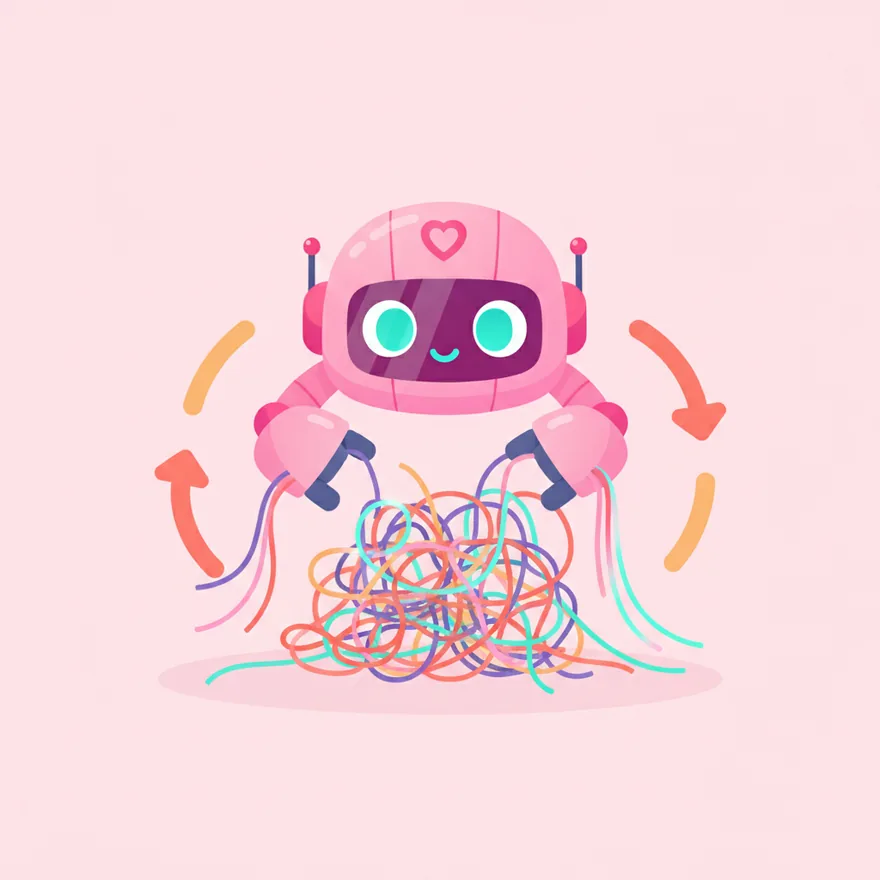

Refactor Codebase ขนาดใหญ่
Claude Code เก่งเรื่อง refactor โค้ดซ้ำๆ ทั้งโปรเจกต์ ที่ถ้าทำมือจะเสียเวลาและพลาดง่าย
เมื่อเรียนจบบทนี้ คุณจะ…
- อธิบายความหมายของ "Refactor โค้ด" ได้
- ระบุประเภทของงาน Refactor ที่ Claude ช่วยได้
- บอกวิธี Refactor โค้ดอย่างปลอดภัยได้

ทำไมต้อง Refactor โค้ด? มาจัดระเบียบบ้านโค้ดกัน!
เคยไหมครับที่รู้สึกว่าโค้ดที่เราเขียนมันเริ่มรกๆ อ่านยาก เข้าใจยาก หรือบางส่วนก็เขียนซ้ำไปซ้ำมา? นั่นแหละครับคือสัญญาณว่าถึงเวลาต้อง 'Refactor' แล้ว! การ Refactor โค้ดก็เหมือนกับการจัดบ้านใหม่ หรือจัดระเบียบตู้เสื้อผ้า ที่ไม่ได้เพิ่มเฟอร์นิเจอร์ใหม่ หรือซื้อเสื้อผ้าใหม่ แต่เป็นการจัดของเดิมที่มีอยู่ให้เป็นระเบียบ หาง่าย ใช้งานสะดวกขึ้น
เป้าหมายหลักของการ Refactor คือการทำให้โค้ดของเรา 'สะอาดขึ้น' 'อ่านง่ายขึ้น' 'ดูแลรักษาง่ายขึ้น' และ 'แก้ไขได้ง่ายขึ้น' โดยที่ 'พฤติกรรมการทำงานของโปรแกรมยังคงเหมือนเดิมทุกประการ' ครับ เหมือนกับเราจัดบ้านใหม่ เฟอร์นิเจอร์ยังอยู่ครบ แต่ห้องดูโล่งขึ้น น่าอยู่ขึ้น นั่นเอง
Claude Code ช่วยงาน Refactor ที่น่าเบื่อให้ง่ายขึ้นได้ยังไง?
ลองนึกภาพว่าคุณต้องจัดบ้านทั้งหลังคนเดียว มันเหนื่อยและใช้เวลานานใช่ไหมครับ? งาน Refactor โค้ดก็เหมือนกัน ยิ่งโปรเจกต์ใหญ่ โค้ดเยอะ งานที่ต้องทำซ้ำๆ กันทั้งโปรเจกต์นี่แหละครับที่น่าเบื่อและผิดพลาดได้ง่าย
Claude Code เก่งมากในการช่วยงานที่ต้องทำซ้ำๆ และมีรูปแบบที่ชัดเจนครับ! เขาไม่ได้แค่ทำเร็วขึ้น แต่ยังช่วยลดโอกาสเกิดข้อผิดพลาดจากการทำมืออีกด้วย โดยเฉพาะงาน Refactor ที่ต้องแก้ไขโค้ดหลายๆ ไฟล์ หรือเปลี่ยนชื่ออะไรบางอย่างที่กระจายอยู่ทั่วโปรเจกต์ Claude สามารถช่วยวิเคราะห์และเสนอการปรับปรุงได้อย่างรวดเร็ว ทำให้เรามีเวลาไปโฟกัสกับงานที่ซับซ้อนกว่าได้มากขึ้นครับ
งาน Refactor แบบไหนที่เหมาะกับ Claude?
Claude Code สามารถช่วยเราในงาน Refactor ได้หลายรูปแบบเลยครับ โดยเฉพาะงานที่ต้องทำซ้ำๆ ทั่วทั้งโปรเจกต์ เช่น:
1. **เปลี่ยนชื่อหรือย้ายฟังก์ชัน (Function) / คลาส (Class):** สมมติว่าคุณมีฟังก์ชันชื่อ calculatePrice ที่ใช้คำนวณราคา แต่ตอนนี้อยากเปลี่ยนเป็น getProductPrice เพื่อให้สื่อความหมายชัดเจนขึ้น ถ้าต้องไล่เปลี่ยนเองทุกที่ในโปรเจกต์ใหญ่ๆ คงปวดหัวแย่ Claude ช่วยจัดการให้ได้ทั้งโปรเจกต์เลยครับ
2. **แยกโค้ดที่ซ้ำกันออกมาเป็น Utility:** บางทีเราเขียนโค้ดส่วนเดิมซ้ำๆ กันหลายที่ Claude สามารถช่วยหาโค้ดที่ซ้ำกันและเสนอให้แยกออกมาเป็นฟังก์ชันหรือโมดูลกลาง (Utility) เพื่อให้โค้ดสะอาดขึ้นและแก้ไขง่ายขึ้นในอนาคต
3. **ปรับเปลี่ยนรูปแบบการเขียนโค้ด (Pattern):** เช่น จากเดิมที่เคยใช้ Callback (โค้ดที่ทำงานต่อกันเป็นทอดๆ) มาเป็น Async/Await (รูปแบบการจัดการโค้ดที่ทำงานแบบไม่พร้อมกันให้ดูง่ายขึ้น) ซึ่งเป็นงานที่ต้องแก้ไขโครงสร้างโค้ดเยอะมาก Claude สามารถช่วยแปลงให้ได้
4. **จัดโครงสร้างโฟลเดอร์ใหม่:** ถ้าโปรเจกต์ของคุณเริ่มมีไฟล์เยอะจนหาไม่เจอ Claude สามารถช่วยแนะนำหรือจัดเรียงไฟล์และโฟลเดอร์ให้เป็นระเบียบตามหลักการที่ดีได้
หัวใจสำคัญ: Refactor อย่างไรให้ปลอดภัย ไม่พัง! (ต้องมี Test ก่อนเสมอ)
การ Refactor โค้ดก็เหมือนการผ่าตัดเล็กๆ ครับ เราต้องมั่นใจว่าหลังผ่าตัด คนไข้ (โปรแกรม) ยังคงทำงานได้ปกติ ไม่ได้เปลี่ยนไปจากเดิม และนี่คือเหตุผลว่าทำไม 'Test' (การทดสอบ) ถึงสำคัญมากๆ ครับ! ก่อนที่เราจะเริ่ม Refactor โค้ดใดๆ ก็ตาม เราควรมี 'Unit Test' หรือ 'Integration Test' ที่ครอบคลุมการทำงานของโค้ดส่วนนั้นๆ อยู่แล้ว
Test เหล่านี้จะทำหน้าที่เหมือน 'ตาข่ายนิรภัย' ครับ เมื่อ Claude ช่วย Refactor โค้ดให้เราเสร็จแล้ว เราจะนำโค้ดที่ได้มาใส่ในโปรเจกต์ แล้ว 'รัน Test ทั้งหมด' อีกครั้ง ถ้า Test ทุกตัวยังผ่าน นั่นหมายความว่าการ Refactor ของเราประสบความสำเร็จ! พฤติกรรมการทำงานของโปรแกรมไม่เปลี่ยนแปลงไปจากเดิมเลย แต่ถ้า Test ตัวไหนไม่ผ่าน ก็แปลว่ามีบางอย่างผิดพลาด เราต้องกลับไปแก้ไขครับ
มาลองใช้ Prompt กับ Claude เพื่อ Refactor โค้ดกัน!
ตอนนี้เราเข้าใจแล้วว่า Claude ช่วยอะไรได้บ้าง และ Test สำคัญยังไง ถึงเวลามาลองใช้งานจริงกันแล้วครับ การคุยกับ Claude เพื่อให้เขาช่วย Refactor โค้ด เราต้องบอกเขาให้ชัดเจนว่า 'ต้องการให้ทำอะไร' และ 'ต้องไม่เปลี่ยนพฤติกรรมการทำงานเดิม' ครับ
นี่คือ Prompt ตัวอย่างที่คุณสามารถนำไปปรับใช้ได้เลยครับ:
ช่วย refactor [อธิบายสิ่งที่คุณต้องการให้ Claude ทำอย่างละเอียด เช่น "เปลี่ยนชื่อฟังก์ชันเก่า calculatePrice เป็น getProductPrice ทั้งโปรเจกต์" หรือ "แยกโค้ดที่ซ้ำกันในไฟล์ utils.js ออกมาเป็นฟังก์ชันย่อยๆ"] ทั้งโปรเจกต์ โดยต้องไม่เปลี่ยนพฤติกรรมการทำงานเดิมของโค้ด
หลังจากที่ Claude ให้โค้ดที่ Refactor มาแล้ว อย่าลืมขั้นตอนสำคัญที่สุดคือการ 'รัน Test' เพื่อยืนยันว่าทุกอย่างยังถูกต้องเหมือนเดิมนะครับ!
- ขั้นที่ 1: ตรวจสอบให้แน่ใจว่าโปรเจกต์ของคุณมี Test ที่ครอบคลุมโค้ดส่วนที่คุณต้องการ Refactor อยู่แล้ว
- ขั้นที่ 2: เปิด Claude Code (หรือแพลตฟอร์มที่คุณใช้ Claude) และเตรียมโค้ดส่วนที่ต้องการ Refactor หรือทั้งโปรเจกต์ให้พร้อม
- ขั้นที่ 3: ป้อน Prompt ที่คุณปรับแต่งแล้วลงไปใน Claude โดยระบุให้ชัดเจนว่าต้องการให้ทำอะไร และย้ำว่า 'ต้องไม่เปลี่ยนพฤติกรรมการทำงานเดิม'
- ขั้นที่ 4: เมื่อ Claude ให้โค้ดที่ Refactor มาแล้ว ให้นำไปวางในโปรเจกต์ของคุณ (อาจจะใน Branch ใหม่ เพื่อความปลอดภัย)
- ขั้นที่ 5: 'รัน Test ทั้งหมด' ในโปรเจกต์ของคุณ เพื่อยืนยันว่าทุกอย่างยังทำงานถูกต้องเหมือนเดิม และไม่มี Test ตัวไหนล้มเหลว
เคล็ดลับสำคัญ: ทำทีละน้อย และบันทึกบ่อยๆ (ใช้ Git ให้เป็นเพื่อนซี้)
การ Refactor โค้ดขนาดใหญ่ ไม่ควรทำรวดเดียวทั้งหมดครับ! ลองนึกภาพการปรับปรุงบ้าน ถ้าเราทุบทุกห้องพร้อมกัน บ้านอาจจะพังและอยู่ไม่ได้เลย แต่ถ้าเราปรับปรุงทีละห้อง ทำทีละส่วน แล้วค่อยๆ ตรวจสอบไปเรื่อยๆ จะปลอดภัยกว่ามาก
หลักการเดียวกันนี้ใช้กับการ Refactor โค้ดครับ: 'Refactor ทีละเรื่อง' (เช่น เปลี่ยนชื่อฟังก์ชันก่อน แล้วค่อยไปแยกโค้ดซ้ำ) และที่สำคัญคือ 'Commit บ่อยๆ' ครับ! การ Commit ในระบบควบคุมเวอร์ชันอย่าง Git ก็เหมือนกับการบันทึกเซฟเกมส์ครับ ถ้าเกิดเรา Refactor ไปแล้วโค้ดพัง หรือมีปัญหาอะไร เราสามารถย้อนกลับไปจุดที่โค้ดเคยทำงานได้ง่ายๆ ทันที ทำให้เราทำงานได้อย่างสบายใจและมั่นใจมากขึ้นครับ
- เหมาะกับงานซ้ำๆ ทั้งโปรเจกต์
- มี test ก่อน refactor
- ทำทีละเรื่อง commit บ่อย